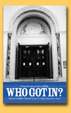

|

 Who Got In? 2005
Carnegie Mellon University
In 2004, our freshman
class of 1,353 students was the same as in 2003. The class was
selected from 14,115 applications, fewer than in 2003. We accepted
5,870 students, more than in 2003. We placed about 2,709 students
on our wait list, fewer than in 2003, and admitted 75 students,
fewer than in 2003. Our 2004 yield of accepted students who actually
enrolled was about 24 percent, the same compared to 2003.
We admitted fewer U.S. minority
students than in 2003. The student body is comprised of 4 percent
African American students, 4 percent Hispanic students, 23 percent
Asian American students, and less than 1 percent Native American
students. Our retention rate for minority students is about 91
percent from freshman to sophomore year; 70 percent in five years.
About 81 percent of all our students graduate in five years.
EARLY AND ELECTRONIC ADMISSIONS
We received 467 Early
Decision/Early Action applications, the same as in 2003. About
10 percent of our 2004 first-year class was accepted ED/EA.
About 3,079 students applied
electronically in 2004, more than in 2003. We accepted 637 international
students in 2004, fewer than in 2003.
We do plan to use the SAT II
Writing test in our 2005 admissions.
FINANCIAL AID AND PROGRAMS
About 59 percent of
our students receive financial aid. The average aid package is
$23,920. Our 2004-2005 tuition is $31,225.
The most popular majors or
programs on our campus are: Computer Science, Electrical and
Computer Engineering. Among 2005 applicants, we seek the following
special skills or talents: "Those who engage outside the
classroom; students wanting to make a difference." We do
give advantage to legacy applicants; "no more or less than
in the past."
ADVICE AND TRENDS
The most important
thing we want prospective students to know about our school is:
"Great balance between the technical, fine arts, and liberal
and professional studies." In 2004, we spotted the following
admission trends: "Less interest in computer sciences."
We found that more students are not taking advantage of
the "gap year." We do give deferments. High schools
can help prepare students for college by "helping students
develop a better sense of self."
We advise 2005 applicants to
"work hard, pursue and develop a passion, be comfortable
in your skin." The number one problem our admissions office
faced in 2004 was "the parents' high expectations versus
reality. Huge sense of entitlement."
DEADLINES
Our deadline for 2005
admissions is November 15 for Early Admission and January 1 for
Regular Admission.
Michael Steidel, Director of
Admission, completed the survey. Carnegie Mellon University,
500 Forbes Ave., Pittsburgh, PA 15213; (412) 268-2082; E-mail
address, ms44@andrew.cmu.edu; Web address, www.cmu.edu/admissions.
Duke University
In 2004, our freshman
class of 1,638 students was smaller than in 2003. The class was
selected from 16,741 applications, more than in 2003. We accepted
3,806 students, fewer than in 2003. Our 2004 yield of accepted
students who actually enrolled was about 43 percent, the same
compared to 2003.
We admitted the same number
of U.S. minority students as in 2003. The student body is comprised
of 11 percent African American students, 7 percent Hispanic students,
13 percent Asian American students, and 1 percent Native American
students. Our retention rate for minority students is about 97
percent from freshman to sophomore year; 99 percent in five years.
About 97 percent of all our students graduate in five years.
EARLY AND ELECTRONIC ADMISSIONS
We received 1,385 Early
Decision/Early Action applications, fewer than in 2003. About
30 percent of our 2004 first-year class was accepted ED/EA.
About 6,000 students applied
electronically in 2004, more than in 2003. We accepted the same
number of international students in 2004 as in 2003. Our international
students come from 130 different countries.
In 2004, the middle 50 percent
of our freshman test scores were 1390-1530 combined SAT, 29-34
ACT. We do not plan to use the SAT II Writing test in our 2005
admissions "unless students submit scores using the elder
SAT-I that doesn't include writing."
FINANCIAL AID AND PROGRAMS
About 42 percent of
our students receive financial aid. Our 2004-2005 tuition is
$29,770.
The most popular majors or programs on our campus are: English,
Biology, Economics, Psychology, Biomedical Engineering, and Public
Polity. Among 2005 applicants, we seek the following special
skills or talents: "Students who are intellectually engaged;
those who are not afraid to challenge themselves or their professors,
those who are active in the arts and/or research."
ADVICE AND TRENDS
The most important
thing we want prospective students to know about our school is:
"Duke creates an environment in which students can pursue
any intellectual interest, including creating their own majors,
as well as rich selections of extracurricular activities."
In 2004, we spotted the following admission trends: "Continued
increase in the overall academic quality of applicants."
We found that more students
are not taking advantage of the "gap year." We do occasionally
give deferments.
We advise 2005 applicants "that
the short answer and essay questions are students' primary opportunity
to speak to the Admissions Committee in their own voices, and
they give the Admissions Committee insight into the students'
interests and aspirations."
DEADLINES
Our deadline for 2005
admissions is November 1 for Early Admission and January 2 for
Regular Admission.
Patty Courtright, Public Relations
Specialist, completed the survey. Duke University, 2138 Campus
Dr., Box 60586, Durham, NC 27708-0586; E-mail address, patty.courtright@duke.edu;
Web address, www.admissions.duke.edu.
The Evergreen State College
In 2004, our freshman
class of 401 students was larger than in 2003. The class was
selected from 3,609 applications, more than in 2003. We accepted
3,028 students, more than in 2003. Our 2004 yield of accepted
students who actually enrolled was about 48 percent, the same
compared to 2003.
We admitted 491 U.S. minority
undergraduate students in 2004, more than in 2003. The student
body is comprised of 5 percent African American students, 5 percent
Hispanic students, 5 percent Asian American students, and 5 percent
Native American students. Our retention rate for minority students
is about 74 percent from freshman to sophomore year.
EARLY AND ELECTRONIC ADMISSIONS
About 2,158 students
applied electronically in 2004, more than in 2003. We accepted
20 international students in 2004, the same as in 2003.
In 2004, our average freshman
test scores were 1130 combined SAT, 23 ACT.
FINANCIAL AID AND PROGRAMS
In fall 2003 to end
of summer 2004, 66 percent of all our undergraduate and graduate
students receive financial aid. The average aid package is $9,376.
Our 2004-2005 tuition is $3,907 for in-state and $14,532 for
out-of-state.
The most popular majors or
programs on our campus are: Environmental Studies, Expressive
Arts, Computer Science, Humanities, and Natural Science. We do
not give advantage to legacy applicants.
ADVICE AND TRENDS
We want prospective
students to know about our "Learning communities, Narrative
evaluations, and Integrated/Coordinated studies."
We found that more students
are not taking advantage of the "gap year."
We give one-year deferments only. High schools can help prepare
students for college by providing more "writing and critical
thinking."
We advise 2005 applicants to
"plan early for admission, scholarships, financial aid and
housing." The number one problem our admissions office faced
in 2004 was "yield to enroll for nonresident freshman."
DEADLINES
Our deadline for 2005
admissions is March 1 for Regular Admission.
Diane H. Kahaumia, Special
Assistant Enrollment Management, completed the survey. The Evergreen
State College, 2700 Parkway Northwest M/SL 1208, Olympia, WA
98505; (360) 867-6497; E-mail address, kahaumid@evergreen.edu;
Web address, www.evergreen.edu.
|